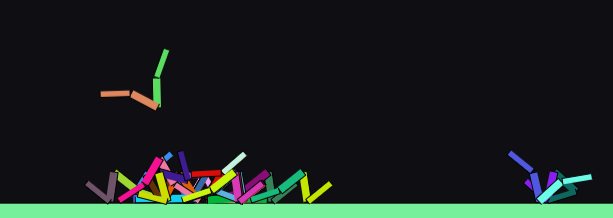

声明: 本文由DataScience 发表, 转载请注明本文链接 mlln.cn, 并在文后留言转载.
摘要 物竞天择是大自然最伟大的发明。生命是如何从无机物一步步进化成智能的实体? 我们可以使用进化算法感受以下这个过程。今天的一个机器学习的小例子不需要任何训练数据和人工指导, 只需要遵循适者生存的生命法则, 就能让生物学会跑步。
本篇文章要带领大家使用tensorflow.js实现一个神经网络, 并使用进化算法更新神经网络的参数, 并使用p5.js实现整个训练过程的可视化。你可以看这个gif图片看到我们要做的东西。另外通过这个DEMO 可以全程观察生物进化的过程, 你会看到跑的更远的生物适应能力更强, 能繁衍更多的后代。
进化算法概念
机器学习模型本质上是函数拟合。
无论是分类，回归还是强化学习，最终目标几乎总是找到将输入数据映射到输出数据的函数。
所以, 问题可以变得很简单, 给你一堆训练数据(包括输入$x$和输出$y$), 你要找到一个函数(调整函数的参数)$f$, 使得$\hat y = f(x)$, 并且 $\hat y ≈ y$
进化算法的过程
我们假设要学习的函数是一个神经网络结构的函数
生成随机神经网络函数参数, 比如生成100个不同的参数但相同结构的函数
使用高斯分布随机确定每个函数的参数
检验这些函数的性能, 选择最好的函数
性能越好的函数有越大的几率影响他们的下一代函数
繁殖下一代函数
重复上面的过程, 逐步提高函数的性能
进化算法有以下的特点:
因此，我们使用几种模型而不是单一模型。这是与梯度下降的关键区别
NEAT，HyperNEAT和新奇搜索就是一些例子
进化策略，遗传算法等对于如何进行遗传优化的方法都略有不同。
用下图来更具体的说明
首先，确定评估性能的方法。
这意味着检查函数并确定哪些函数表现最佳。
接下来，基于评估结果选择优秀的函数。
对于DNN，常用指标定义为损失或奖励。
生成下一代函数, 让优秀的祖先获得更高的权重来影响下一代的函数参数, 并且增加一些随机值来提高函数的可能性
进化算法用途
Tensorflow.js架构 这里不详细介绍tensorflow.js, 有兴趣的可以关注我以后的教程。总的来说, tensorflow.js分类两个部分:
核心 API (Low Level) - 我们今天的代码用的就是这一部分
计算图是一系列TensorFlow操作，排列成图形。
图形由两种类型的对象组成。
操作（或“操作”）：图形的节点。操作描述消耗和产生张量的计算。
张量：图中的边缘。这些代表将流经图表的值。大多数TensorFlow函数返回tf.Tensors。
1 2 3 a = tf.constant (3.0 , dtype=tf.float32 ) b = tf.constant (4.0 ) # also tf.float32 implicitly total = a + b
Layers (high level)
图层将变量和作用于它们的操作打包在一起。
例如，全连接层对每个输出的所有输入执行加权和，并应用可选的激活函数。
连接权重和偏差由图层对象管理。
以下代码创建一个Dense图层，它接受一批输入向量，并为每个向量生成一个输出值。
要将图层应用于输入，请将图层称为函数。例如：
1 2 3 x = tf.placeholder (tf.float32 , shape=[None , 3 ]) linear_model = tf.layers .Dense (units=1 ) y = linear_model (x)
模型介绍 (我会使用”生物”这个词来代表我的函数, 进化算法常常这么叫)

我们要在网页上创建一个20个生物
他们需要自己摸索如何走路, 并且走的越远越表明”基因”越优秀
为了简单, 他们只有两条腿, 如上图
所有生物都有3层前馈神经网络作为他们的大脑
每层的神经元个数是4/10/X，其中输出层中的节点数X取决于生物的肌肉数量。
馈送到网络的输入数据是(可以当作这些生物只有这4个感觉)：
性能指标
生物可以根据它从起点移动的距离获得分数。
它越向正确的方向行进，它获得的分数越多, 说明这个函数的性能越好。
在相反方向行驶，将减少分数。
选择优胜的生物
根据生物的性能选择生物, 被选择的生物才有机会进行繁殖。
他们所得的分数被用于计算选择的概率。
表现更好的生物具有更高的分数，因此具有更高的机会进行繁殖。
交配繁殖:
使用上面的选择算法选择两个生物（父母）。
如下图所示，它们的权重按位随机互换，形成一组新的权重。
在我们的例子中，一个位代表一个权重值。这组新的权重用于形成一个新的生物（孩子）, 也可以被称为一个函数。
突变
突变率通常约为1-2％，实际上是引入随机性的概率。
代码实现 第一部分实现一个神经网络结构(生物的大脑) 1 2 3 4 5 6 7 8 9 10 11 12 13 14 15 16 17 18 19 20 21 22 23 24 25 26 27 28 29 30 31 32 33 34 35 36 37 38 39 40 41 42 43 44 45 46 47 48 49 50 51 52 53 54 55 56 57 58 class NeuralNetwork { constructor (input_nodes, hidden_nodes, output_nodes ) { this .input_nodes = input_nodes; this .hidden_nodes = hidden_nodes; this .output_nodes = output_nodes; this .input_weights = tf.randomNormal ([this .input_nodes , this .hidden_nodes ]); this .output_weights = tf.randomNormal ([this .hidden_nodes , this .output_nodes ]); } predict (user_input ) { let output; tf.tidy (() => { let input_layer = tf.tensor (user_input, [1 , this .input_nodes ]); let hidden_layer = input_layer.matMul (this .input_weights ).sigmoid (); let output_layer = hidden_layer.matMul (this .output_weights ).sigmoid (); output = output_layer.dataSync (); }); return output; } clone ( let clonie = new NeuralNetwork (this .input_nodes , this .hidden_nodes , this .output_nodes ); clonie.dispose (); clonie.input_weights = tf.clone (this .input_weights ); clonie.output_weights = tf.clone (this .output_weights ); return clonie; } dispose ( this .input_weights .dispose (); this .output_weights .dispose (); } }
第二部分实现达尔文选择和交配繁殖 1 2 3 4 5 6 7 8 9 10 11 12 13 14 15 16 17 18 19 20 21 22 23 24 25 26 27 28 29 30 31 32 33 34 35 36 37 38 39 40 41 42 43 44 45 46 47 48 49 50 51 52 53 54 55 56 57 58 59 60 61 62 63 64 65 66 67 68 69 70 71 72 73 74 75 76 77 78 79 80 81 82 83 84 85 86 87 88 89 90 91 92 93 94 95 96 97 98 99 100 101 102 103 104 105 106 107 108 class Generation { constructor (population ) { this .population = population; this .species = []; this .generation = 1 ; this .high_score = 0 ; this .avg_score = 0 ; this .total_score = 0 ; this .fitness = 0 ; this .progress = 0 ; } initialize (Person ) { for (let i = 0 ; i < this .population ; i++) { let new_Person = new Person ({ upper_length : 30 , upper_width : 8 , lower_length : 30 , lower_width : 6 , x : width * 0.15 , y : height * 0.85 , id : i }); this .species .push (new_Person); } } pickOne ( let index = 0 ; let r = Math .random (); while (r > 0 ) { r -= this .species [index].fitness ; index += 1 ; } index -= 1 ; let selected = this .species [index].clone (); return selected; } evolve ( this .generation += 1 ; let gen_highscore = Math .max .apply (Math , this .species .map (o =>score )); this .high_score = gen_highscore > this .high_score ? gen_highscore : this .high_score ; let total_score = 0 ; this .species .forEach ((person ) => { total_score += person.score }); this .progress = (total_score / this .population ) - this .avg_score this .avg_score = total_score / this .population ; for (let i = 0 ; i < this .population ; i++) { this .species [i].fitness = this .species [i].score / total_score; }; let new_generation = []; for (let i = 0 ; i < this .population ; i++) { let parentA = this .pickOne (); let parentB = this .pickOne (); let child = parentA.crossover (parentB); child.mutate (); child.id = i; child.params .id = i; child.colors = [parentA.colors [0 ], parentB.colors [1 ]]; child.parents = [{ id : parentA.id , score : this .species [parentA.id ].score }, { id : parentB.id , score : this .species [parentB.id ].score }]; new_generation.push (child); } for (let i = 0 ; i < this .population ; i++) { this .species [i].kill (world); } this .species = new_generation; for (let i = 0 ; i < this .population ; i++) { this .species [i].add_to_world (world); } } }
第三部分可视化相关代码 可视化是用p5.js实现的, 因为不是这篇文章的重点, 所以这里没有贴出来。
总结 通过上面的代码, 你应该能够理解进化算法的基本理念了。进化算法和梯度下降法的区别就是他们更新函数参数的方法不同。
你可以通过这个在线Demo , 观察整个生物进化过程。
上面的代码来自这个GitHub , 感谢作者.
注意 notebook